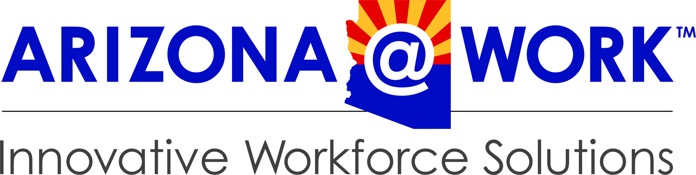

How well do you think Skilled Trades fits you?
1 means not a fit. 5 means strong fit. Give your first impression before exploring the skills and situations ahead. We will ask again later.
You explored what employers are asking for.
Now you'll face six real-world skilled-trades situations. Look at what's happening, decide what matters most, and choose what you would actually do.
You experienced the work.
Now let's look at what you already bring. Think about the tools, systems, and technical environments you've encountered through work, school, training, military service, hobbies, or home projects. This isn't a test—just tell us what's familiar.
Technical Exposure
This is not a competency test. Experience can come from work, school, training, military service, hobbies, home projects, or other settings.
Now check your fit again. You've experienced the work and thought about what you already bring. Knowing what you know now, how well does Skilled Trades fit you? Your answer doesn't need to match your first one.
How well do these skilled-trades workplace situations fit you?
Don't worry about matching your first answer. We're interested in whether experiencing the work changed your perspective.
You're almost there. Take a moment to think about what stood out, what felt natural, and whether this experience changed how you see Skilled Trades.
What did the experience tell you?
There is no right career-fit answer here. Think about what felt natural, what challenged you, and what you would want to explore next.
Skills Explored
Workplace Judgment
Technical Exposure
What Changed?
Where Your Responses Stood Out
What This Means
Important: This is a career-alignment learning activity, not a hiring assessment, certification exam, or determination that you are qualified to perform skilled-trades duties.
Nice work. You've completed the Skilled Trades Workplace Skills Challenge. Take a look at your results, and don't forget to grab your certificate.

Certificate of Completion
Presented to
for completing the
Experience the Work.